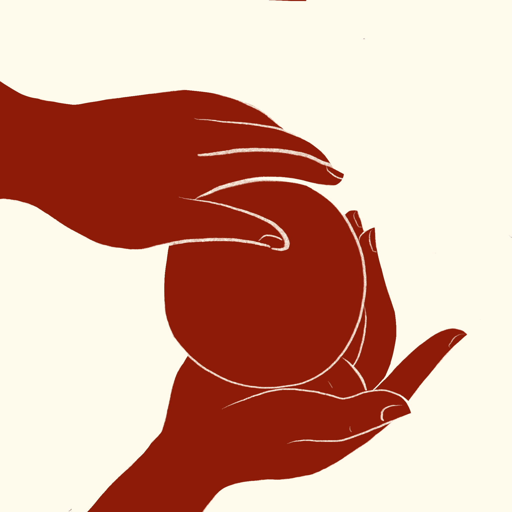

ತುಳು ಸಂಪ್ರದಾಯದಲ್ಲಿ ಆಧ್ಯಾತ್ಮಿಕ ಗುರಾಣಿಯಾಗಿ ತೆಂಗಿನಕಾಯಿ

ನಮ್ಮ ಜಗತ್ತು ಒಳ್ಳೆಯ ಮತ್ತು ಕೆಟ್ಟ ಎರಡೂ ಆಧ್ಯಾತ್ಮಿಕ ಶಕ್ತಿಗಳಿಂದ ತುಂಬಿದೆ ಎಂದು ತುಳು ಜನರು ಯಾವಾಗಲೂ ನಂಬಿದ್ದಾರೆ. ನಮ್ಮನ್ನು ರಕ್ಷಿಸುವ ದಯಾಳು ದೇವರುಗಳು ಮತ್ತು ದೇವತೆಗಳು ಇದ್ದರೂ, ಜನರಿಗೆ ಹಾನಿ ಮಾಡಲು ಬಯಸುವ ದುಷ್ಟ ಶಕ್ತಿಗಳೂ ಇವೆ.
ಈ ಅಭ್ಯಾಸವನ್ನು ತರೈದ್ ಬಂಧಮಲಪಣೆ ಎಂದು ಕರೆಯಲಾಗುತ್ತದೆ. ಇದರ ಮೂಲ ಅರ್ಥ "ಜನರು ಮತ್ತು ಸ್ಥಳಗಳನ್ನು ರಕ್ಷಿಸಲು ದುಷ್ಟಶಕ್ತಿಗಳನ್ನು ಹಿಡಿಯುವುದು."
ಯಾರಾದರೂ ದುಷ್ಟ ಶಕ್ತಿಗಳಿಂದ ತೊಂದರೆಗೊಳಗಾಗುತ್ತಿದ್ದಾರೆ ಎಂದು ಭಾವಿಸಿದಾಗ — ಬಹಳಷ್ಟು ಅನಾರೋಗ್ಯ, ದುರದೃಷ್ಟ, ಅಥವಾ ಭಯ — ಅವರು ಈ ರಕ್ಷಣಾತ್ಮಕ ಆಚರಣೆ ಮಾಡಬಲ್ಲ ಯಾರನ್ನಾದರೂ ಕರೆಯುತ್ತಿದ್ದರು.
ಸಾಂಕೇತಿಕ ಹಿತ್ತಾಳೆಯ ತೆಂಗಿನಕಾಯಿ ಚಿಪ್ಪುಗಳನ್ನು ಆಧ್ಯಾತ್ಮಿಕ ಬಲೆಗಳು ಅಥವಾ ಗುರಾಣಿಗಳಂತೆ ಉಪಯೋಗಿಸಲಾಗುತ್ತಿತ್ತು. ಅವುಗಳನ್ನು ಮಾಯಾಶಕ್ತಿಯ ಕೀಟ ಹಿಡಿಯುವ ಸಾಧನಗಳಂತೆ ಯೋಚಿಸಿ — ಆದರೆ ಕೀಟಗಳನ್ನು ಹಿಡಿಯುವ ಬದಲು, ಅವು ಕೆಟ್ಟ ಆಧ್ಯಾತ್ಮಿಕ ಶಕ್ತಿಯನ್ನು ಹಿಡಿಯಲು ಅಥವಾ ತಡೆಯಲು ಉದ್ದೇಶಿಸಲಾಗಿತ್ತು. ನರಳುತ್ತಿರುವ ವ್ಯಕ್ತಿಯ ಎಲ್ಲಾ ತೊಂದರೆಗಳನ್ನು ಹಿತ್ತಾಳೆಯ ತೆಂಗಿನಕಾಯಿಯೊಳಗೆ ಹಾಕಲಾಗುತ್ತಿತ್ತು, ಇದರಿಂದ ಅವು ಭವಿಷ್ಯದಲ್ಲಿ ಅವರನ್ನು ಮತ್ತೆ ತೊಂದರೆಗೊಳಿಸದಂತೆ ತಡೆಯಬಹುದಿತ್ತು.
ತುಳು ಸಂಪ್ರದಾಯದಲ್ಲಿ, ಆಧ್ಯಾತ್ಮಿಕ ವೈದ್ಯರು ಮತ್ತು ಧಾರ್ಮಿಕ ನಾಯಕರನ್ನು ಹೆಚ್ಚು ಗೌರವಿಸಲಾಗುತ್ತಿತ್ತು. ಅವರು ವೈದ್ಯರಂತೆ ಇದ್ದರು — ಆಧ್ಯಾತ್ಮಿಕ ಸಮಸ್ಯೆಗಳಿಗೆ. ಮತ್ತು ಆ ಸಾಧಾರಣ ತೆಂಗಿನಕಾಯಿ ಅವರ ಪ್ರಮುಖ ಸಾಧನಗಳಲ್ಲಿ ಒಂದಾಗಿತ್ತು!